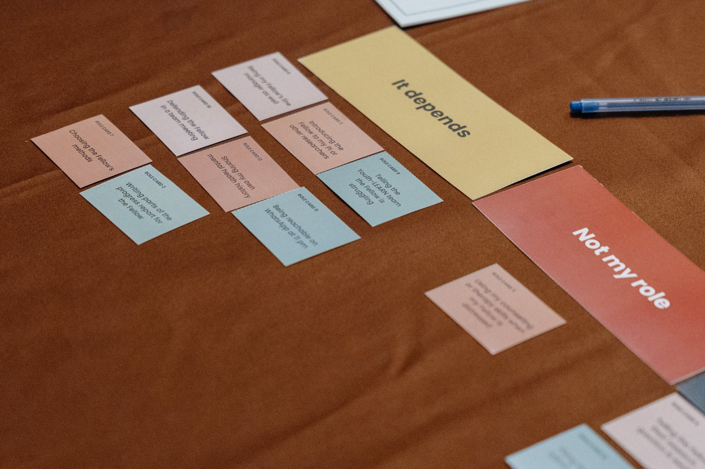
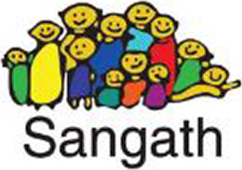
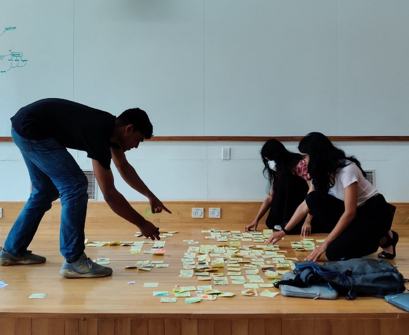
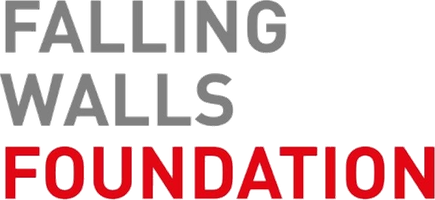
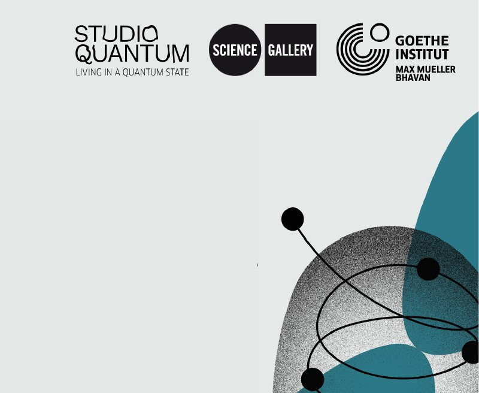
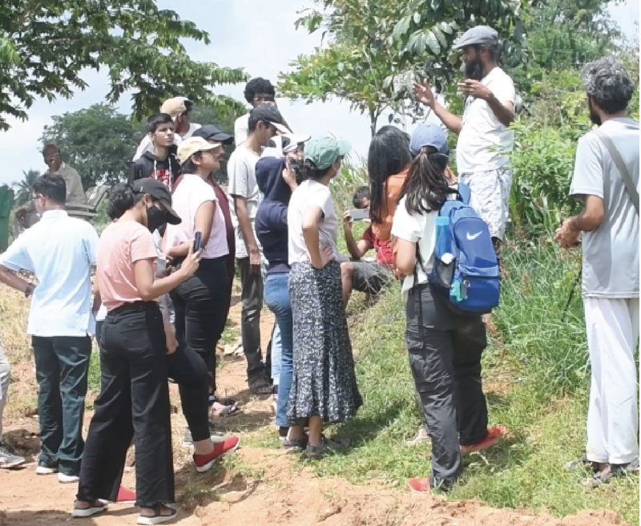
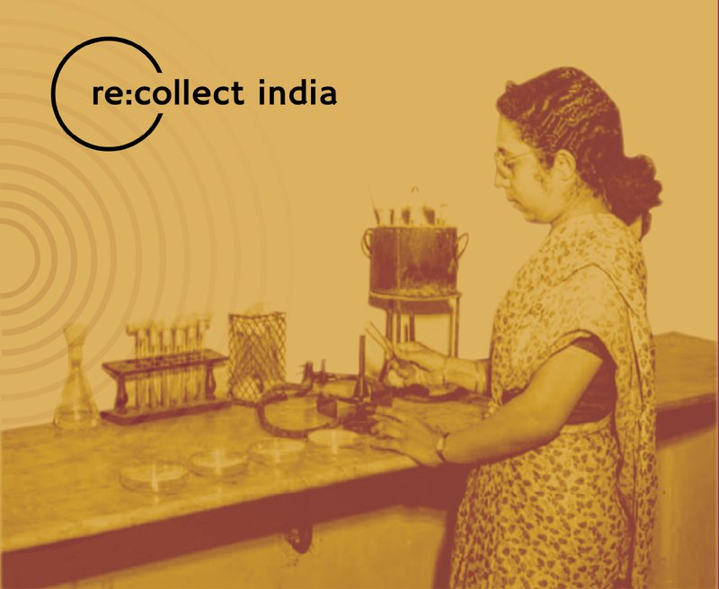

Programmes
Workshops, mentorship and collaboration programmes that bring artists, scientists, young people and communities together.

Being a Companion
A two-hour induction workshop for the Companions of Sangath's Youth-LEARN Fellowship: researchers, clinicians and founders supporting young people with lived experience. A card sort, a spectrum line, roleplays and forum theatre led to a shared charter.



Xperimenter Programme
A learning and mentorship programme I conceived for young adults, with workshops, proseminars and mentorship from leading experts across disciplines. The Xperimenters also advised the gallery on its public engagement and brought young voices into the programmes.

Read more ↗
Studio Quantum
For the Goethe-Institut's international residency on quantum technologies, I facilitated a gathering of ten artists and scientists. Together we looked at how sectors could support artists working with quantum technologies, and what a Bengaluru residency would need.


Summer School on Carbon
As co-investigator on the IIHS–GCRF grant "Transforming Education for a Sustainable Future", I helped build a residential school on carbon in the Anthropocene. Twenty participants from across India moved between theory, the lab, the field and the archives.

Re:Collect India
A crowd-sourced oral history archive of the first generation of independent India's scientists, engineers and technicians, led by young people. I supported Dr Jahnavi Phalkey on its programme design, website and resources.